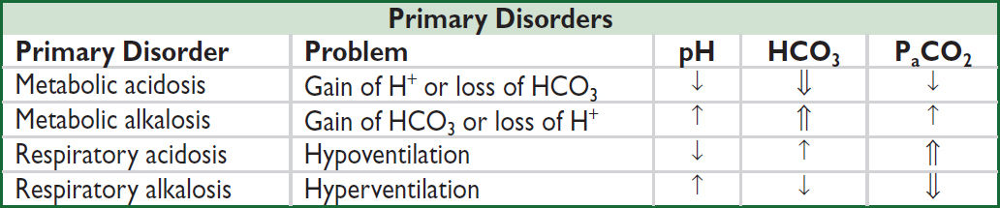
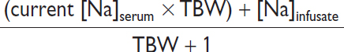
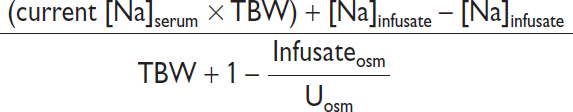
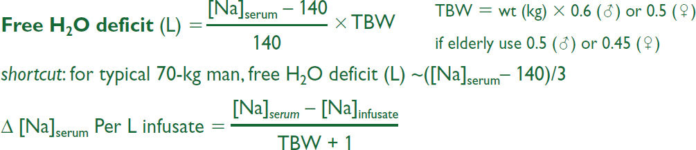
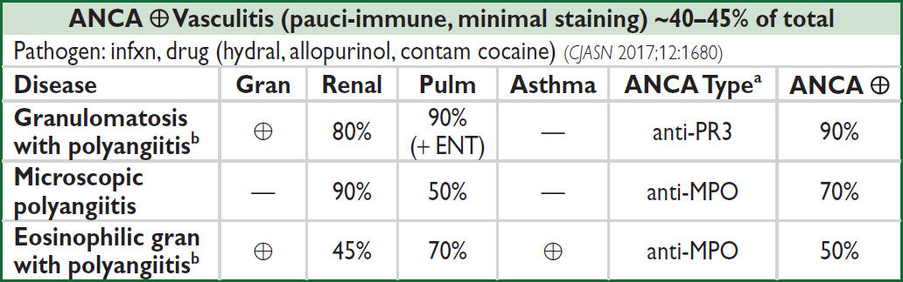

GENERAL
Definitions
• Acidemia → pH <7.36, alkalemia → pH >7.44; pH = 6.10 + log([HCO3]/[0.03xPCO2])
• Acidosis → process that ↑ [H+] or ↓ pH by ↓ HCO3 or ↑ PaCO2
• Alkalosis → process that ↓ [H+] or ↑ pH by ↑ HCO3 or ↓ PaCO2
• Primary disorders: metabolic acidosis or alkalosis, respiratory acidosis or alkalosis
• Compensation
Respiratory: hyper/hypoventilation alters PaCO2 to counteract 1° metabolic process
Renal: excretion/retention of H+/HCO3– to counteract 1° respiratory process
Respiratory compensation occurs in mins-hrs; renal compensation takes days
Compensation usually never fully corrects pH; if pH normal, consider mixed disorder
Consequences of Severe Acid-Base Disturbances (NEJM 1998;338:26 & 107) |
||
Organ System |
Acidemia (pH <7.20) |
Alkalemia (pH >7.60) |
Cardiovascular |
↓ contractility, arteriolar vasodilation ↓ MAP & CO; ↓ response to catecholamines ↑ risk of arrhythmias |
Arteriolar vasoconstriction ↓ coronary blood flow ↑ risk of arrhythmias |
Respiratory |
Hyperventilation, ↓ resp. muscle strength |
Hypoventilation |
Metabolic |
↑ K (resp. > metab.), insulin resistance |
↓ K, Ca, Mg, PO4 |
Neurologic |
Δ MS |
Δ MS, seizures, tetany |
Workup (NEJM 2014;371:1434)
• Traditional or physiologic approach (Brønsted-Lowry definition of acids & bases)
Determine primary disorder: ✓ pH, PaCO2, HCO3
Determine if degree of compensation is appropriate

Compensation for Acid-Base Disorders (NEJM 2014;371:1434) |
|
Primary Disorder |
Expected Compensation |
Metabolic acidosis |
↓ PaCO2 = 1.2 × ΔHCO3 or PaCO2 = (1.5 × HCO3) + 8 ± 2 (Winters’ formula) (also, PaCO2 ≈ last 2 digits of pH) |
Metabolic alkalosis |
↑ PaCO2 = 0.7 × ΔHCO3 or PaCO2 = 0.7 (HCO3–24) + 40 ± 2 or HCO3 + 15 |
Acute respiratory acidosis |
↑ HCO3 = 0.1 × ΔPaCO2 (also, ↓ pH = 0.008 × ΔPaCO2) |
Chronic respiratory acidosis |
↑ HCO3 = 0.35 × ΔPaCO2 (also, ↓ pH = 0.003 × ΔPaCO2) |
Acute respiratory alkalosis |
↓ HCO3 = 0.2 × ΔPaCO2 (also, ↑ pH = 0.008 × ΔPaCO2) |
Chronic respiratory alkalosis |
↓ HCO3 = 0.4 × ΔPaCO2 |
• Alternative approaches
Base excess/deficit (NEJM 2018;378:1419)
Strong ion difference or “Stewart Method” (NEJM 2014;371:1821)
Mixed disorders (more than one primary disorder at the same time)
• If compensation less or greater than predicted, may be two disorders:
PaCO2 too low → concomitant 1° resp. alk.; PaCO2 too high → concomitant 1° resp. acid.
HCO3 too low → concomitant 1° met. acid.; HCO3 too high → concomitant 1° met. alk.
• Normal pH, but...
↑ PaCO2 + ↑ HCO3 → resp. acid. + met. alk.
↓ PaCO2 + ↓ HCO3 → resp. alk. + met. acid.
Normal PaCO2 & HCO3, but ↑ AG → AG met. acid. + met. alk.
Normal PaCO2, HCO3, & AG → no disturbance or non-AG met. acid. + met. alk.
• Cannot have resp. acid. (hypoventilation) and resp. alk. (hyperventilation) simultaneously
(Adapted from Brenner BM, ed., Brenner & Rector’s The Kidney, 8th ed., 2007; Ferri F, ed. Practical Guide to the Care of the Medical Patient, 7th ed., 2007)
• ABG vs. VBG: concordant for pH (~0.04), HCO3 (~2 mEq) but not PCO2 (~8±17 mmHg)
VBG can be used to screen for hypercarbia w/ PCO2 cutoff ≥45 mmHg (100% Se),
but may not accurately assess degree of hypercarbia (Am J Emerg Med 2012;30:896)
METABOLIC ACIDOSIS
Initial workup (NEJM 2014;371:1434)
• ✓ anion gap (AG) = Na+ – (Cl– + HCO3–) = unmeasured anions – unmeasured cations
If ↑ glc, use measured not corrected Na
Expected AG is [albumin] × 2.5 (ie, 10 if albumin is 4 g/dL, 7.5 if albumin is 3 g/dL)
↑ AG → ↑ unmeasured anions such as organic acids, phosphates, sulfates
↓ AG → ↓ alb or ↑ unmeasured cations (Ca, Mg, K, Li, Ig), bromide/iodine toxicity
• If ↑ AG, ✓ delta-delta (Δ/Δ = ΔAG/ΔHCO3) to assess if there is an additional metabolic
acid-base disturbance; ΔAG = (calculated AG – expected AG), ΔHCO3 = (24 – HCO3)
Δ/Δ = 1–2 → pure AG metabolic acidosis
Δ/Δ <1 → AG metabolic acidosis and simultaneous non-AG acidosis
Δ/Δ >2 → AG metabolic acidosis and simultaneous metabolic alkalosis
For pure lactic acidosis Δ/Δ 1.6 b/c of slow lactate clearance
Etiologies of AG Metabolic Acidosis |
|
Ketoacidosis |
Diabetes mellitus, alcoholism, starvation (NEJM 2015;372:546) |
Lactic acidosis (NEJM 2014; 371:2309) |
Type A: hypoxic (eg, shock, mesenteric ischemia, CO poisoning, cyanide) Type B: nonhypoxic. ↓ clearance (eg, hepatic dysfxn) or ↑ generation [eg, malig, EtOH, thiamine def., meds (metformin, NRTIs, salicylates, propylene glycol, propofol, isoniazid, linezolid)] D-lactic acidosis: short bowel syndrome → precip by glc ingest → metab by colonic bacteria to d-lactate; not detected by standard lactate assay |
Renal failure |
Accumulation of organic anions (eg, phosphates, sulfates, etc.) |
Ingestions (NEJM 2020; 382:2544) |
Glycols: Ethylene (antifreeze) → metab to glycolic and oxalic acids Propylene (pharmaceutical solvent, eg, IV diazepam, lorazepam, and phenobarbital; antifreeze) → lactic acidosis Diethylene (brake fluid) → diglycolic acid 5-oxoproline (pyraglutamic acid): acetaminophen → ↑ organic acid 5- oxoproline in susceptible Pts (malnourished, female, renal failure) Methanol (windshield fluid, antifreeze, solvents, fuel): metab to formic acid Aspirin: early resp alkalosis (CNS stim) + late metab acidosis (impairs oxidative phosphorylation → inorganic acids (eg, ketones, lactate) |
“GOLD MARK” = Glycols, Oxoproline, Lactic, D-Lactic, Methanol, ASA, Renal, Ketoacidosis
Workup for AG metabolic acidosis (AJKD 2021;78:A16)
• ✓ for ketonuria (dipstick acetoacetate) or plasma β-hydroxybutyrate (βOHB)
nb, urine acetoacetate often not present in early ketoacidosis due to shunting to βOHB; ∴ acetoacetate may later turn ⊕ but does not signify worsening disease
• If ⊖ ketones, ✓ renal function, lactate, toxin screen, and osmolal gap
• If obtunded or ↑↑ AG, check osmolal gap (OG) = measured osmoles – calculated osmoles
Calculated osmoles = (2 × Na) + (glucose/18) + (BUN/2.8) (+ [EtOH/4.6] if ↑ EtOH level and want to test if other ingestions)
OG >10 → suggests ingestion (see below) but lacks specificity (can be elevated in lactic acidosis, DKA, and alcoholic ketoacidosis due to acetone)
High-dose lorazepam (>10 mg/h) a/w propylene glycol intoxication
OG & AG vary based on timing, initially OG ↑, then ↓ w/ metabolism as AG ↑
Ingestions (NEJM 2018;378:270) Call poison control for guidance (800-222-1222) |
|||
AG |
OG |
Ingestion |
Other Manifestations |
↑ |
nl |
Acetaminophen |
Hepatitis |
Salicylates |
Fever, tachycardia, tinnitus; met. acid. + resp. alkalosis |
||
↑ |
↑ |
Methanol |
ΔMS, blurred vision, pupillary dilation, papilledema |
↑ |
↑ |
Ethylene glycol |
ΔMS, cardiopulm. failure, hypoCa. Ca oxalate crystals → AKI. Urine fluoresces under UV light. |
nl/↑ |
↑ |
Propylene glycol |
AKI, liver injury |
↑ |
nl/↑ |
Diethylene glycol |
AKI, N/V, pancreatitis, neuropathy, lactic acidosis |
nl/↑ |
↑ |
Isopropyl alcohol |
ΔMS, fruity breath (acetone), pancreatitis, lactic acidosis |
Ethanol |
Alcoholic fetor, ΔMS, hepatitis; keto + lactic acidosis ± met. alk. (vomiting) |
||
Etiologies of Non-AG Metabolic Acidosis |
|
GI losses of HCO3 |
Diarrhea, intestinal or pancreatic fistulas or drainage |
RTAs |
See section on renal tubular acidoses below |
Early renal failure |
Impaired generation of ammonia |
Ingestions |
Acetazolamide, sevelamer, cholestyramine, toluene |
Dilutional |
Due to rapid infusion of bicarbonate-free IV fluids |
Posthypocapnia |
Respiratory alkalosis → renal wasting of HCO3; rapid correction of resp. alk. → transient acidosis until HCO3 regenerated |
Ureteral diversion |
Colonic Cl–/HCO3– exchange, ammonium reabsorption |
Workup for non-AG metabolic acidosis
• Evaluate history for causes (see above)
• ✓ urine anion gap (UAG) = (UNa + UK) – UCl
UAG = unmeasured anions – unmeasured cations; NH4+ is primary unmeasured cation (represented by UCl). UAG is indirect assay for renal H+ excretion.
• ⊖ UAG → ↑ renal NH4+ excretion → appropriate renal response to acidemia
Ddx: GI causes (diarrhea, fistulas, ureteral diversion), IV NS, ingestions
• ⊕ UAG → failure of kidneys to generate NH4+
Ddx: distal (type 1, usually ↓ K) or hypoaldo (type IV, usually ↑ K) RTA, early renal failure
• UAG unreliable in AKI/CKD, polyuria, Na depletion (UNa <20), UpH >6.5 & HAGMA (causes ⊕ UAG b/c excretion of organic anions) and less useful in prox RTA as variable. Then use UOsm gap = measured UOsm – [2×(Na+ + K+) + BUN + glc (mmol/L)]. UOsm gap <40 mmol/L indicates impaired NH4+ excretion
Renal tubular acidoses (RTAs) (Adv Ther 2021;38:949)
• Proximal (Type II): ↓ proximal reabsorption of HCO3
1° (Fanconi’s syndrome) = ↓ proximal reabsorption of HCO3, PO4, glc, amino acids
Acquired: paraprotein (MM, amyloidosis), metals (Pb, Cd, Hg, Cu), ↓ vit D, PNH, renal Tx
Meds: acetazolamide, aminoglycosides, ifosfamide, cisplatin, topiramate, tenofovir
• Distal (Type I): defective distal H+ secretion
1°, autoimmune (Sjögren’s, RA, SLE), hypercalciuria, meds (ampho, Li, ifosfamide); normally a/w ↓ K; if with ↑ K → sickle cell, obstruction, renal transplant
• Hypoaldo (Type IV): hypoaldo → ↑ K → ↓ NH3 synthesis → ↓ urine acid-carrying capacity
↓ renin: diabetic nephropathy, NSAIDs, chronic interstitial nephritis, calcineurin inh, HIV
↓ aldo production: 1° AI, ACEI/ARBs, heparin, severe illness, inherited (↓ 21-hydroxylase)
↓ response to aldosterone
Meds: K-sparing diuretics, TMP-SMX, pentamidine, calcineurin inhibitors
Tubulointerstitial disease: sickle cell, SLE, amyloid, DM
• Combined (Type III): rarely discussed or clinically relevant, also called juvenile RTA, has distal & proximal features, can be due to carbonic anhydrase II deficiency
aUrine pH will rise above 5.3 in the setting of HCO3 load
bFeHCO3 should be checked after an HCO3 load
cSee above for causes of distal RTA (Type I) associated with hyperkalemia
Treatment of severe metabolic acidoses (pH <7.2) (Nat Rev Nephrol 2012;8:589)
• DKA: insulin, IVF, K repletion (NEJM 2015;372:546); AKA: dextrose, IVF, replete K, Mg, PO4
• Lactic acidosis: treat underlying condition, avoid vasoconstrictors, avoid “Type B” meds
• Renal failure: hemodialysis
• Methanol & ethylene glycol: fomepizole (20 mg/dL), vit. B1 & B6 (ethylene glycol), folate (methanol), dialysis (if AKI, VS unstable, vision Δ or >50 mg/dL) (NEJM 2018;378:270)
• Alkali therapy: if pH <7.1 or <7.2 and co-existing AKI (may ↓ mortality; Lancet 2018;392:31)
• NaHCO3: amps by IV push or infusion of three 50-mmol amps in 1 L D5W if less urgent
Can estimate mmol of HCO3 needed as [desired-current HCO3]serum × wt (kg) × 0.4
Side effects: ↑ volume, ↑ Na, ↓ ICa, ↑ PaCO2 (& ∴ intracellular acidosis; ∴ must ensure adequate ventilation to blow off CO2)
METABOLIC ALKALOSIS
Pathophysiology (CJASN 2020;15:1848)
• Saline-responsive etiologies require initiating event and maintenance phase
• Initiating event: net HCO3− reabsorption (due to loss of volume, Cl-, and/or K+) or loss of H+
Loss of H+ (± Cl-) from GI tract, kidneys, or transcellular shift in hypokalemia
Contraction alkalosis: loss of HCO3--poor fluid → extracellular fluid “contracts” around fixed amount of HCO3- → ↑ HCO3- concentration
Exogenous alkali: iatrogenic HCO3- (with renal impairment), milk-alkali syndrome
Posthypercapnia: resp. acidosis → compensation with H+ excretion and HCO3- retention; rapid correction of hypercapnia (eg, intubation) → transient excess HCO3-
• Maintenance phase
Volume depletion → ↑ ATII → ↑ PCT reabsorption of HCO3- & ↑ aldosterone (see below)
Cl- depletion → ↓ Cl- uptake in macula densa → ↑ RAS & ↑ CCD Cl-/HCO3- exchanger
Hypokalemia → transcellular K+/H+ exchange; intracellular acidosis → HCO3- reabsorption and ammoniagenesis & ↑ distal H+-K+-ATPase activity → HCO3- retention
Hyperaldosteronism (1° or 2°) → ↑ CCD α-intercalated H+ secretion w/ HCO3- retention & Na+ reabsorption in principal cell → H+ secretion (for electrical neutrality)
Workup
• Check volume status and UCl
UCl <25 mEq/L → saline responsive
UCl >40 mEq/L → saline resistant (unless currently receiving diuretics)
(UNa unreliable determinant of volume status in alkalemia → ↑ HCO3- excretion → ↑ Na excretion; negatively charged HCO3- w/ Na+ maintaining electrical neutrality)
If UCl >40 and volume replete, ✓ UK; UK <20 laxative abuse; UK >30, ✓ blood pressure
Treatment of severe metabolic alkalosis (pH >7.6) (JASN 2012;23:204)
• If saline responsive: resuscitate with Cl-rich solution (NS), replete K, d/c diuretics cardiopulmonary disease precludes hydration, can use KCl, acetazolamide, HCl
• Hyperaldosteronism: treat underlying condition, K-sparing diuretic, resect adenoma if 1o
RESPIRATORY ACIDOSIS (NEJM 1989;321:1223; Crit Care 2010;14:220)
Etiologies (also see “Hypercapnia”; PaCO2 = VCO2/VE(1-VD/VT); VE = RR x VT)
• ↑ CO2 production (↑ VCO2): fever, thyrotoxicosis, sepsis, steroids, overfeeding (carbs)
• CNS depression (↓ RR and/or VT): sedatives (opiates, benzos, etc.), CNS trauma, central sleep apnea, obesity, hypoventilation, hypothyroidism
• Neuromuscular disorders (↓ VT): Guillain-Barré, poliomyelitis, ALS, MS, paralytics, myasthenia gravis, muscular dystrophy, severe ↓ P & K, high spinal cord injury
• Chest wall (↓ VT): PTX, hemothorax, flail chest, kyphoscoliosis, ankylosing spondylitis
• Upper airway (↓ VT): foreign body, laryngospasm, OSA, esophageal intubation
• Lower airway (gas exchange) (↑ VD and/or ↓ VT): asthma, COPD, pulm edema, IPF
Often hypoxia → ↑ RR → resp. alk., but muscle fatigue → resp. acid
• Post infusion of bicarbonate in acidemic Pt w/ limited ability to ↑ minute ventilation
RESPIRATORY ALKALOSIS
Etiologies (NEJM 2002;347:43; Crit Care 2010;14:220)
• Hypoxia → hyperventilation: pneumonia, CHF, PE, restrictive lung disease, anemia
• Primary hyperventilation
CNS stimulation, pain, anxiety, trauma, stroke, CNS infection, pontine tumors
drugs: salicylates toxicity (early), β-agonists, progesterone, methylxanthines, nicotine
pregnancy, sepsis, hepatic failure, hyperthyroidism, fever
• Pseudorespiratory alkalosis: ↓ perfusion w/ preserved ventilation (eg, CPR, severe HoTN) → ↓ delivery of CO2 to lungs for excretion; low PaCO2 but ↑ tissue CO2
OVERVIEW
General (NEJM 2015;372:55 & 373:1350)
• Disorders of serum sodium are generally due to Δs in total body water, not sodium
• Hyper- or hypo-osmolality → rapid water shifts → Δs in brain cell volume → Δ MS, seizures
Key hormones
• Antidiuretic hormone (ADH): primary hormone that regulates sodium concentration
Stimuli: hyperosmolality (290–295 mOsm), ↓↓ effective arterial volume, angiotensin II
Action: insertion of aquaporin-2 channels in principal cells → passive water reabsorption
urine osmolality is an indirect functional assay of the ADH-renal axis
Uosm range: 50 mOsm/L (no ADH) to 1200 mOsm/L (maximal ADH)
• Aldosterone: primary hormone that regulates total body sodium (and ∴ volume)
Stimuli for secretion: hypovolemia (via renin and angiotensin II), hyperkalemia
Action: iso-osmotic principal cell reabsorption of Na via epithelial Na channel (ENaC) in exchange for K+ or H+
HYPONATREMIA
Pathophysiology (JASN 2008;19:1076; NEJM 2015;372:1349)
• Excess H2O relative to Na, usually due to ↑ ADH
• ↑ ADH may be appropriate (eg, hypovolemia or hypervolemia with ↓ EAV)
• ↑ ADH may be inappropriate (SIADH)
• Rarely, ↓ ADH (appropriately suppressed), but kidneys unable to maintain nl [Na]serum
at steady state, solute intake = solute excretion; urine output = solute excretion/Uosm
nl dietary solute load ~750 mOsm/d, min Uosm = 50 mOsm/L, ∴ UOP can be up to ~15 L
↑ H2O intake (1° polydipsia): ingestion of massive quantities (usually >15 L/d) of free H2O overwhelms diluting ability of kidney → H2O retention
↓ solute intake (“tea & toast” & beer potomania): ↓↓ daily solute load → insufficient solute to excrete H2O intake (eg, if only 250 mOsm/d, minimum Uosm = 50 mOsm/L → excrete in ~5 L; if H2O ingestion exceeds this amount → H2O retention)
Workup (JASN 2012;23:1140 & 2017;28:1340; Crit Care 2013;17:206; NEJM 2015;372:55)
• History: (1) acute vs. chronic (>48 h); (2) sx severity; (3) risk for neuro complications (alcoholism, malnourished, cirrhosis, older women on thiazides, hypoxia, hypoK)
• Measure plasma osmolality
Hypotonic (Posm <280) most common scenario; true excess of free H2O relative to Na
Isotonic (Posm 280–295): rare lab artifact from hyperlipidemia or hyperproteinemia
Hypertonic (Posm >295): excess of another effective osmole (eg, glucose, mannitol) that draws H2O intravascularly; for each 100 mg/dL ↑ glc >100 mg/dL → ↓ [Na] by ~2 mEq/L
• For hypotonic hyponatremia, ✓ volume status (JVP, skin turgor, dry axilla, mucous membranes, edema, ascites), effusions, vital signs, orthostatics, BUN/Cr, FEUricAcid, UNa
• Measure Uosm, although useful for dx in limited circumstances, b/c almost always >300
Uosm <100 in ↑ H2O intake (1o polydipsia) or ↓ solute intake (beer potomania, “tea & toast”)
Uosm >300 does not mean SIADH; must determine if ↑ ADH appropriate or inappropriate
however, Uosm can be important when deciding on treatment (see below)
• If euvolemic and ↑ Uosm, evaluate for glucocorticoid insufficiency and hypothyroidism
• If available, consider FEUricAcid as >12% suggests SIADH (J Clinc Endo 2008;93:2991)
Hypovolemic hypotonic hyponatremia (ie, ↓↓ total body Na, ↓ TBW)
• Renal losses (UNa >20 mEq/L, FENa >1%): diuretics (esp. thiazides, because loop diuretics
↓ tonicity of medullary interstitium, Δ for H2O absorption, & ∴ urine concentrating ability), salt-wasting nephropathy, cerebral salt wasting, mineralocorticoid deficiency
• Extrarenal losses (UNa <10 mEq/L, UCl <10 mEq/L if alkalemia, FENa <1%): hemorrhage, GI loss (diarrhea or vomiting), third-spacing (pancreatitis), ↓ PO intake, insensible losses
Euvolemic hypotonic hyponatremia (ie, ↑ TBW relative to total body Na)
• SIADH (euvolemia or mild hypervolemia, typically inapprop Uosm >100, UNa >20 mEq/L)
Malignancy: lung (SCLC), brain, GI, GU, lymphoma, leukemia, thymoma, mesothelioma
Pulmonary: pneumonia, TB, aspergillosis, asthma, COPD, PTX, mechanical ventilation
Intracranial: trauma, stroke, SAH, seizure, infxn, hydrocephalus, Guillain-Barré
Drugs: antipsychotics, antidepress. (SSRI, TCA, MAOi), haloperidol, chemo (vincristine, cisplatin), AVP, MDMA, NSAIDs, opiates, amiodarone (Am J Kidney Dis 2008;52:144)
Miscellaneous: pain, nausea, postoperative state
• Endocrinopathies: ↑ ADH activity seen in glucocorticoid deficiency (co-secretion of ADH & CRH) and severe hypothyroidism/myxedema coma (↓ CO/SVR → ADH release & ↓ GFR)
• Psychogenic polydipsia (Uosm <100, ↓ FEUric Acid): usually intake >15 L/d
• Low solute (↓ UNa, ↓ Uosm) “tea & toast”; beer potomania
• Reset osmostat: chronic malnutrition (↓ intracellular osmoles) or pregnancy (hormonal
effects) → ADH physiology reset to regulate a lower [Na]serum
Hypervolemic hypotonic hyponatremia (ie, ↑ total body Na, ↑ ↑ TBW)
• ↓ EAV → ↑ RAAS → ↑ aldosterone & ↑ adrenergic tone → ↑↑ ADH (Am J Med 2013;126:S1)
• CHF (↓ CO & renal venous congestion → ↓ EAV; UNa <10 mEq/L, FENa <1%)
• Cirrhosis (splanchnic arterial vasodilation + ascites → ↓ EAV; UNa <10 mEq/L, FENa <1%)
• Nephrotic syndrome (hypoalbuminemia → edema → ↓ EAV; UNa <10 mEq/L, FENa <1%)
• Advanced renal failure (diminished ability to excrete free H2O; UNa >20 mEq/L)
Treatment (NEJM 2015;372:55; JASN 2017;28:1340; CJASN 2018;13:641 & 984)
• Approach: depends on volume status, acuity of hyponatremia, and if symptomatic
Acute sx: initial rapid correction of [Na]serum (2 mEq/L/h for the first 2–3 h) until sx resolve
Asx or chronic symptomatic: correct [Na]serum at rate of ≤0.5 mEq/L/h
Rate ↑ Na should not exceed 6 (chronic) to 8 (acute) mEq/L/d to avoid central pontine myelinolysis/osmotic demyelination (CPM/ODS: paraplegia, dysarthria, dysphagia)
If severe (<120) or neuro sx: consider 3% NaCl. dDAVP 1-2 µg q8h in consultation with nephrology (to prevent rapid overcorrection) (AJKD 2013;61:571; CJASN 2018; 13:641)
• Frequent lab draws and IVF rate adjustments are cornerstones of treatment
• Rapid correction: can lead to CPM/ODS (esp if chronic or Na <120 mEq/L). Should be emergently reversed w/ dDAVP ± D5W; partial neuro recovery possible (CJASN 2014;9:229).
• Effect of IV fluids: complex as depends not only on [Na]infusate but also UOP and Uosm
Scenario |
Formula to estimate new [Na]serum after 1 L infusion |
If minimal UOP and none of infused Na excreted |
 |
If euvolemic (eg, in SIADH) & all infused Na excreted |
 |
In SIADH “fixed” high Uosm. ∴ in SIADH w/ Uosm 616, 1 L NS (154 mEq Na or 308 mOsm solute in 1 L H2O) will be excreted in 0.5 L H2O → net gain 0.5 L H2O. ∴ NS worsens [Na]serum if Uosm >infusateosm. In contrast, 1 L 3% NaCl (1026 mOsm) would be excreted in ~1.7 L urine → net loss 0.7 L H2O. ∴ 3% saline ↑ [Na]serum.
Effect of 1 L infusion in 70-kg male w/ [Na]serum 110 mEq/L & Uosm 616 mOsm/kg |
|||
IVF Type |
[Na]content |
No UOP |
Infused Na excreted |
0.9% NaCl |
154 mEq/L |
+1.0 mEq/L |
-1.3 mEq/L |
3% NaCl |
513 mEq/L |
+9.4 mEq/L |
+1.8 mEq/L |
• Hypovolemic hyponatremia: volume repletion with isotonic 0.9% saline at a slow rate. Once volume replete → stimulus for ADH removed (w/ very short ADH t½) → kidneys excrete free H2O → serum Na will correct rapidly (D5W ± dDAVP if overcorrection)
• SIADH (NEJM 2007;356:2064; AJKD 2020;76:203): fluid restrict + treat underlying cause
hypertonic saline (± loop diuretic; AJKD 2020;76:203) if sx or Na fails to ↑ w/ fluid restriction Intermittent bolus of 3% saline (~2 mL/kg q6h) vs. continuous infusion (~0.5 mL/kg/h) similar (JAMA IM 2021;181:81) when moderate symptoms. Must recheck serum Na frequently during hypertonic use (at least q2h).
NaCl tabs if chronic and no CHF. Consider urea 0.25–0.5 g/kg/d (CJASN 2018;13:1627)
aquaresis: vaptans (vasopressin receptor antag) for refractory SIADH (NEJM 2015;372:23)
• Hypervolemic hyponatremia: free water restrict (1st line), diurese w/ loop diuretics (avoid thiazides) & ↑ EAV (vasodilators to ↑ CO in CHF, colloid infusion in cirrhosis)
vaptans sometimes used; however, no mortality benefit, hypoNa recurs after stopping drug, high risk of overcorrection, contraindicated in cirrhosis (NEJM 2015;372:2207)
HYPERNATREMIA
Pathophysiology (Crit Care 2013;17:206; NEJM 2015;372:55)
• Deficit of water relative to sodium; by definition, all hypernatremic Pts are hypertonic
• Usually loss of hypotonic fluid (ie, “dehydration”); occasionally infusion of hypertonic fluid, post-ATN diuresis w/ loss of low or electrolyte-free water (Am J Neph 2012;36:97)
• And impaired access to free water (eg, intubation, Δ MS, elderly): hypernatremia is a powerful thirst stimulus, ∴ usually only develops in Pts w/o access to H2O or ill
Workup
• ✓ Uosm, UNa, volume status (vital signs, orthostatics, JVP, skin turgor, BUN, Cr)
Extrarenal H2O loss (Uosm >700–800)
• GI H2O loss: vomiting, NGT drainage, osmotic diarrhea, fistula, lactulose, malabsorption
• Insensible loss: fever, exercise, ventilation, burns
Renal H2O loss (Uosm <700–800)
• Diuresis: osmotic (glucose, mannitol, urea), loop diuretics
• Diabetes insipidus (Nature Reviews Nephrology 2015;11:576)
ADH deficiency (central) or resistance (nephrogenic)
Central: hypothalamic or posterior pituitary disease (congenital, trauma/surgery, infiltrative/IgG4); also idiopathic, hypoxic/ischemic encephalopathy (shock, Sheehan’s syndrome), anorexia, sarcoidosis, histiocytosis, drugs: EtOH, phenytoin, snake venom, tumors: craniopharyngioma, germinoma, lymphoma, leukemia, meningioma, pituitary
Nephrogenic (Annals 2006;144:186)
congenital (ADH receptor V2 mutation, aquaporin-2 mutation; Pediatric Clinics 2019;66:227)
drugs: lithium, amphotericin, demeclocycline, foscarnet, cidofovir, ifosfamide
metabolic: hypercalcemia, severe hypokalemia, protein malnutrition, congenital
tubulointerstitial: postobstruction, recovery phase of ATN, PKD, sickle cell, Sjögren’s, amyloid, pregnancy (placental vasopressinase)
DI usually presents as severe polyuria and mild hypernatremia
Other (Uosm >700–800)
• Na overload: hypertonic saline (eg, resuscitation w/ NaHCO3), mineralocorticoid excess
• Seizures, ↑ exercise: ↑ intracellular osmoles → H2O shifts → transient ↑ [Na]serum
Treatment (NEJM 2015;372:55)
• Restore access to H2O or supply daily requirement of H2O (≥1 L/d)
• Replace free H2O deficit (also replace concurrent volume deficit if appropriate):

eg, 1 L D5W given to 70-kg man w/ [Na] = 160 mEq/L will ↓ [Na]serum by 3.7 mEq
nb, do not forget to correct Na if hyperglycemia also present
• Rate of correction depends on acuity of onset and risk:
chronic (>48 hr): ~12 mEq/d appears safe w/o risk of cerebral edema (CJASN 2019;14:656)
acute (<48 hr): may ↓ Na by 2 mEq/L/h until Na 145
hyperacute (min-hrs) & life threatening (ICH, seizure): rapidly infuse D5W ± emergent HD
• Estimate: in 70-kg man, 125 mL/h of free H2O will ↓ [Na] by ~0.5 mEq/L/h
• ½ NS (77 mEq/L) or ¼ NS (38 mEq/L) provides both volume & free H2O (500 or 750 mL of free H2O per L, respectively); can give free H2O via NGT/OGT
• Formulas provide only estimates; ∴ recheck serum Na frequently
• DI and osmotic diuresis: see “Polyuria” section below
• Na overload: D5W + diuretic. Consider HD if life threatening (ICH, hypertonia, seizures).
POLYURIA
Definition and pathophysiology
• Polyuria defined as >3 L UOP per day
• Due to an osmotic or a water diuresis; almost always due to osmotic diuresis in inpatients
Workup
• Perform a timed urine collection (6 h sufficient) and measure Uosm
• 24-h osmole excretion rate = 24-h UOP (actual or estimate) × Uosm
>1000 mOsm/d → osmotic diuresis; <800 mOsm/d → water diuresis
Osmotic diuresis
• Etiologies
Hyperglycemia (>180 exceeds PCT reabsorption), mannitol, propylene glycol
Na: NaCl IVF, recovering AKI (eg, post obstruction)
Urea: ↑ protein feeds, hypercatabolism (burns, steroids), GI bleed, resolving azotemia
Water diuresis
• Etiologies: DI (Naserum >143) or 1° polydipsia (Naserum <136)
see “Hypernatremia” above for list of causes of central and nephrogenic DI
• Workup of DI: Uosm <300 (complete) or 300–600 (partial)
water deprivation test (rarely used)
hypertonic saline-stimulated plasma copeptin >4.9 pmoL/L indicates 1° polydipsia (97% accuracy vs. 77% for water deprivation; NEJM 2018;379:428)
Treatment
• 1° polydipsia: treat psychiatric illness, check meds, restrict access to free H2O
• Osmotic diuresis: address underlying cause, replace free H2O deficit (see “Hypernatremia” for formula to calculate) and ongoing losses
• DI:
Central DI: desmopressin (dDAVP, 1st line), low Na/protein diet + HCTZ, chlorpropamide
Nephrogenic DI: treat underlying cause if possible; Na restriction + HCTZ (mild volume depletion → ↓ delivery of filtrate for free H2O absorption), consider amiloride for Li- induced DI (Kid Int 2009;76:44), indomethacin (NEJM 1991;324:850) or trial desmopression
Pregnancy-induced DI: due to vasopressinase from placenta, ∴ Rx w/ dDAVP
Overview (NEJM 2015;373:60)
• Renal: K excretion regulated at distal nephron (CCD) by principal & α-intercalated cells
Distal Na delivery & urine flow: Na absorption → lumen electronegative → K secretion
Metabolic alkalemia and aldosterone: increase Na absorption and K secretion
nb, diurnal urinary K excretion (day >night), ∴ 24-h sample preferred over spot
• Transcellular shifts: most common cause of acute ∆ in serum K (98% intracellular)
Acid-base disturbance: K+/H+ exchange across cell membranes
Insulin → stimulates Na-K ATPase → hypokalemia (mitigates postprandial ↑ K)
Catecholamines → stimulate Na-K ATPase → hypokalemia; reversed by β-blockers
Massive necrosis (eg, tumor lysis, rhabdo, ischemic bowel) → release of intracellular K
Hypo- or hyperkalemic periodic paralysis: rare disorders due to channel mutations
• Diet: alone rarely causes ↑ or ↓ K (total body store ~3500 mEq, daily intake ~100 mEq)
HYPOKALEMIA
Transcellular shifts (UK:Cr <13 mEq/g)
• Alkalemia, insulin, catecholamines, β2-agonists, hypothermia, hypokalemic/thyrotoxic periodic paralysis, acute ↑ hematopoiesis (megaloblastic anemia Rx w/ B12, AML crisis), chloroquine; overdose: Ba/Cs, antipsychotics (risperidone, quetiapine), theophylline
GI potassium losses (UK:Cr <13 mEq/g)
• GI losses plus metabolic acidosis: diarrhea, laxative abuse, villous adenoma
• Vomiting & NGT drainage usually manifest as renal losses due to 2° hyperaldo & met. alk.
Renal potassium losses (UK:Cr >13 mEq/g)
• Hypotensive or normotensive
acidosis: DKA, RTA [distal RTAs (type I) >proximal RTAs (type II)]
alkalosis: diuretics (thiazide >loop), vomiting/NGT drainage (via 2° hyperaldosteronism)
Bartter’s syndrome (loop of Henle dysfxn→ furosemide-like effect; JASN 2017;28:2540)
Gitelman’s syndrome (DCT dysfxn→ thiazide-like effect (KI 2017;91:24)
drugs: acetaminophen overdose, PCN, gent., ampho, foscarnet, cisplatin, ifosfamide
↓ Mg: less Mg to inhibit principal cell ROMK channel, ∴ ↑ K secretion (JASN 2010;21:2109)
• Hypertensive: mineralocorticoid excess
1° hyperaldosteronism (eg, Conn’s syndrome, glucocorticoid-remediable aldosteronism)
2° hyperaldosteronism (eg, renovascular disease, renin-secreting tumor)
Nonaldosterone mineralocorticoid (eg, Cushing’s, Liddle’s [↑ ENaC], exogenous, licorice)
Clinical manifestations
• Nausea, vomiting, ileus, weakness, muscle cramps, rhabdomyolysis, ↓ insulin secretion
• Renal: ammoniagenesis, phosphaturia, hypocitraturia, NaCl & HCO3 retention, polyuria
• ECG: may see U waves, ↑ QT, flat Tw, ST depression, ventricular ectopy (PVCs, VT, VF)
Workup (JAMA 2021;12:1216)
• Identify transcellular shifts & treat. TTKG validity questioned (Curr Op Nephro 2011;20:547).
• ✓ UK:Cr: >13 mEq/g → renal loss; <13 mEq/g → extrarenal loss (AJKD 2019;74:682)
• If renal losses, ✓ BP, acid-base, UCl (UNa unreliable), UCa/Cr, renin, aldosterone, cortisol
Treatment (JAMA 2000;160:2429)
• If true potassium deficit: potassium repletion (↓ 1 mEq/L ≈ 200 mEq total body loss)
Dosage: 40 mEq PO q4h, 10 mEq/h (IV), 20 mEq/h (central line), 40 mEq in 1 L IVF
• Replete K+ to >3 or >4 mEq/L if high-risk (HTN, CHF, arrhythmias, MI, digoxin, cirrhosis)
• Beware of excessive potassium repletion if transcellular shift cause of hypokalemia
• Treat underlying cause (if ↓ vol: avoid dextrose as ↑ insulin → intracellular potassium shifts)
• Consider Rx that ↓ K loss: ACEI/ARB, K+-sparing diuretics, βB
• Replete Mg if <2 mEq/L: IV Mg-SO4 1–2 g q2h and oral Mg-oxide (limited by diarrhea).
Causes of low Mg: GI loss (diarrhea, bypass, pancreatitis, malnutrition, PPI); renal loss (diuretics, nephrotoxic drugs, EtOH, ↑ Ca, 1° wasting syndromes, volume expansion)
HYPERKALEMIA
Transcellular shifts (BMJ 2009;339:1019)
• Acidemia, ↓ insulin (DM), cell lysis (tumor, rhabdo, ischemic bowel, hemolysis, transfusions, resorbing hematomas, hyperthermia, rewarming), hyperkalemic periodic paralysis, ↑ osmolality. Drugs: succinylcholine, aminocaproic acid, digoxin, β-blockers.
Decreased GFR
• Any cause of oliguric or anuric AKI or any cause of end-stage renal disease
Normal GFR but with ↓ renal K excretion
• Normal aldosterone function
↓ EAV (K excretion limited by ↓ distal Na delivery & urine flow): CHF, cirrhosis
Excessive K intake: in conjunction with impairment in K excretion or transcellular shift
Ureterojejunostomy (absorption of urinary K in jejunum)
• Hypoaldosteronism: same as etiologies of hypoaldo RTA (type IV)
↓ renin: DM, NSAIDs, chronic interstitial nephritis, HIV, multiple myeloma, Gordon’s
Normal renin, ↓ aldo synthesis: 1° adrenal disorders, ACEI, ARBs, heparin, ketoconazole
↓ response to aldosterone
Meds: K-sparing diuretics, TMP-SMX, pentamidine, calcineurin inhibitors
Tubulointerstitial disease: sickle cell, SLE, amyloid, diabetes
Clinical manifestations
• Weakness, nausea, paresthesias, palpitations; Renal: ↓ NH4+ secretion → acidosis
• ECG: ST depression, peaked T waves, ↓ QT, ↑ PR interval, ↑ QRS width, loss of P wave, sine wave pattern, PEA/VF (ECG: low sens., cardiac arrest can be first manifestation!)
Workup (Crit Care Med 2008;36:3246)
• Rule out pseudohyperkalemia (IVF w/ K, tourniquet, hemolysis, ↑ plt or WBC), rule out transcellular shift
Treatment of Hyperkalemia |
|||
Intervention |
Dose |
Onset |
Comment |
Ca gluconate Ca chloridea |
1–2 amps IV |
<3 min |
Transient effect (30–60 min) Stabilizes cell membrane |
Insulin |
reg insulin 5–10 U IV + 1–2 amps D50W |
15–30 min |
Peak 30–60 min, lasts 4–6 h ↓ K 0.5–1.2 mEq/L |
Bicarbonate (esp. if acidemic) |
1–2 amps IV 150 mEq in 1 L D5W |
15–30 min |
Exchange K for H+ in cells Lasts 5–6 h; ↓ K 0.7 mEq/L |
β2 agonists |
albuterol 10–20 mg inh. or 0.5 mg IV |
30–90 min |
Peak 90 min, lasts 2–6 h ↓ K 0.5–1.4 mEq/L (IV >inh) |
K-binding resins |
SPSb 15–60 g PO/PR patiromer 8.4–25.2 g/d PO Na zirconium 5–10 g PO |
4–24 hrs hrs-d hrs |
Exchange K for cations in gut (Na, Ca, H); ↓ K 0.8–1 mEq/L/d. Edema & HTN w/ Na zirconium. |
Diuretics |
furosemide ≥40 mg IV |
30 min |
↓ total body K |
Hemodialysis |
Most rapid in 1st hr (1 mEq/L) |
↓ total body K (JASN 2017;28:3441) |
|
aCaCl contains more calcium and is typically reserved for codes (↑ risk of tissue necrosis) or via central line
b~0.4% intestinal necrosis esp. postop, ileus, SBO/LBO, bowel disease (UC), renal txp (Clin Nephro 2016;85:38)
• Assess GFR, if normal, then ✓UK, UNa (<25 mEq/d ↓ distal Na delivery). ✓ UK:Cr (<13 favors ↓ renal K excretion).
• Rate of onset important to note when establishing a treatment plan (Mayo Clinic 2020;96:744)
• Stabilize (initial): 10% CaCl (central) or gluconate (IV). ↑ memb. potential → ↓ excitability
• Redistribute: insulin + dextrose (continuous if NPO), HCO3, β2-agonists
• Eliminate: SPS, patiromer, Na zirconium, diuretics (w/ saline if preserved renal fxn), consider emergent HD in life-threatening situations
• Patient information for diet education: http://www.kidney.org/atoz/content/potassium
ACUTE KIDNEY INJURY (AKI)
Definition (KDIGO 2012;2:1)
• Stages in ICU correspond to ↑ hospital mortality and LOS (Crit Care Med 2009;37:2552)
Stage 1: Cr ≥0.3 mg/dL in 2d or ↑ Cr ≥50%, or UOP <0.5 mL/kg/h for ≥6h
Stage 2: ↑ Cr 2–3x baseline in 7d or UOP <0.5 mL/kg/h for ≥12h
Stage 3: ↑ 3x baseline in 7d, UOP <0.3 mL/kg/h for ≥24h, anuria ≥12h, or Cr >4
• Cannot estimate GFR using Cr in setting of AKI or ∆’ing Cr (requires steady state)
Workup (NEJM 2014;371:55)
• H&P: meds, contrast, or other nephrotoxins; ↓ PO intake, HoTN, infxn/sepsis; trauma, myalgias; BPH/retention. Search for insult 24–48 hr prior ↑ Cr. VS, vol status, rash.
• Urine evaluation: output, urinalysis, sediment, electrolytes, and osmolality
• Fractional excretion Na (FENa) = (UNa/PNa)/(UCr/PCr); if diuretic, ✓ FEUN=(UUN/PUN)/(UCr/PCr)
• Renal U/S or CT: r/o obstruction & cortical atrophy in chronic kidney disease
• Serologies (if indicated): see “Glomerular Disease”
• Renal biopsy (microscopy, IF, and EM): if etiology unclear (esp. if proteinuria/hematuria). Relative contraindic.: SBP>150, ASA/NSAID, anticoag, cirrhosis. DDAVP if GFR <45.
Etiologies and Diagnosis of Acute Kidney Injury (Ann Inter Med 2017;9:66) |
||
Etiologies |
UA, Sediment, Indices |
|
Prerenal |
↓ Effective arterial volume (NEJM 2007;357:797) Hypovolemia, ↓ CO (CHF), ↓ oncotic pressure (cirrhosis, nephrotic), vasodilation (sepsis) Δ local renal perfusion: NSAIDs, ACEI/ARB, contrast, calcineurin inhib, HRS, hyperCa Large vessel: RAS (bilateral + ACEI), VTE, dissection, abd compart. synd. (renal vs. compress), vasculitis |
Bland Transparent hyaline casts FENa <1%, BUN/Cr >20 FEUN ≤35% |
Intrinsic |
Acute tubular necrosis (ATN) Severe ischemia, sepsis, CIN (↓ RBF + toxin) Toxins Drugs: vanc, AG, cisplatin, foscarnet, HES (starch), IVIG, pentamidine, amphotericin, tenofovir Pigments: Hb, myoglobin (NEJM 2009;361:62) Monoclonal: Ig light chains (Blood 2010;116:1397) Crystals: UA, ACV, MTX, indinavir, oral NaPO4 |
Pigmented granular muddy brown casts ± RBCs & protein from tubular damage FENa >2%, BUN/Cr <20 (except pigment, CIN) FEUN >50% |
Acute interstitial nephritis (AIN) Allergic: β-lactams, sulfa drugs, NSAIDs, PPIs Infection: pyelo, viral, legionella, TB, leptospirosis Infiltrative: sarcoid, lymphoma, leukemia Autoimmune: Sjögren’s, TINU, IgG4, SLE, ICIs |
WBCs, WBC casts, ± RBCs w/ neg UCx ⊕ urine eos in abx ⊕ lymphs in NSAIDs |
|
Small-med vessel: chol emboli, PAN, TMAs (TTP, HUS, atypical HUS, DIC, preeclampsia, APS, malignant HTN, scleroderma renal crisis) |
± RBCs ⊕ urine eos in chol emboli |
|
Glomerulonephritis (see “Glomerular Disease”) |
Dysmorphic RBCs, RBC casts |
|
Post |
Bladder neck: BPH, prostate cancer, neurogenic bladder, anticholinergic meds Ureteral (bilateral or unilateral in single kidney): malig, LAN, retroperitoneal fibrosis, nephrolithiasis |
Bland ± non-dysmorphic RBCs, WBC, crystals |
General treatment (CJASN 2008;3:962)
• Prerenal: isotonic IVF ≈ alb (NEJM 2004;350:22). No clear benefit of balanced crystalloids (eg, LR) over normal saline (NEJM 2018;378:829 & 2022;386:815).
• Avoid nephrotoxic insults (meds and contrast); renally dose medications
• Optimize hemodynamics (both MAP & CO) and maintain euvolemia (NEJM 2007;357:797)
• No benefit to dopamine (Annals 2005;142:510), diuretics (JAMA 2002;288:2547), or mannitol
Managing complications
• May take 1–3 wk to recover from ATN; anticipate volume overload, ↑ K, ↑ PO4, acidosis
• Episodes of AKI ↑ risk of CKD progression, even after recovery (NEJM 2014;371:58)
• Indications for urgent dialysis (when condition refractory to conventional therapy)
Acid-base disturbance: refractory acidemia
Electrolyte disorder: hyperK; hyperCa, hyperPO4, tumor lysis syndrome
Intoxications (http://www.extrip-workgroup.org/): Poison Control (1-800-222-1222)
Indicated for: methanol, ethylene glycol, metformin, Li, valproic acid, salicylates, barbiturates, theophylline, thallium
Consider for: carbamazepine, APAP, dig (Rx Digibind), dabigatran (Rx idarucizumab)
Overload: refractory hypervolemia → hypoxemia (eg, CHF)
Uremia: pericarditis, encephalopathy, bleeding
• In stage 3 AKI, wait until above indication or oliguria >72 hrs (NEJM 2016;375:122; Lancet 2020;395:1506). If oliguria >72 hrs, further delaying until urgent indication ↑ mortality (Lancet 2021;397:1293).
DISEASE-SPECIFIC MANAGEMENT
Acute interstitial nephritis (AIN) (CJASN 2017;12:2046 & JASN 2020;31:435)
• Commonly drug-induced: β-lactams, sulfa drugs, NSAIDs, PPIs, quinolones, allopurinol
• If suspected, prompt removal of offending drug; ? early steroids w/in 7d of dx
• Rechallenging after suspected ICI-induced AIN may depend on oncology natural history
Cardiorenal syndrome (CRS) (CJASN 2017;12:1624)
• Multifactorial pathophys including: 1) ↓ CO, 2) ↑ renal venous congestion, 3) ↑ RAAS
• Bidirectionality: acute CHF → AKI, and oliguric AKI can worsen CHF (JACC 2008;52:1527)
• Rx: IV loop diuretics (bypass gut edema; dosing below); no diff. between high vs. low dose and bolus vs. gtt (NEJM 2011;364:797). No clinical benefit: dopa, nesiritide, ultrafilt.
• Prognosis: 7% ↑ mortality a/w each 10 mL/min ↓ eGFR in ADHF (JACC 2006;47:1987)
Contrast-induced acute kidney injury (CIAKI) (NEJM 2019;380:2146)
• Risk factors: CKD, DM, CHF, age, hypotension, ↑ contrast volume (JACC 2004;44:1393)
• AKI 24–48 h post contrast, peaks 3–5 d, resolves 7–10 d (consider chol emboli if does not)
• Prevention: consider if eGFR <60 (espec. w/ proteinuria), DM, MI, HoTN (CJASN 2013;8:1618)
Isotonic IV fluids: may be helpful if high risk (Lancet 2017;389:1312)
Outpatients: 3 mL/kg/h × 1 h prior, 1–1.5 mL/kg/h × 6 h after (JAMA 2004;291:2328)
Inpatients: 1 mL/kg/h × 6–12 h pre, intra, post-procedure (Lancet 2014;383:1814)
Hold ACEI/ARB (AJKD 2012;60:576), NSAIDs, diuretics. Min. contrast & use iso-osmolar.
• Nephrogenic systemic fibrosis: fibrosis of skin, joints, internal organs ~2–4 wk post gado exposure in CKD 4–5 (JACC 2009;53:1621). Postgado HD encouraged, though limited data.
Hepatorenal syndrome (HRS; see “Cirrhosis”; AJKD 2013;62:1198)
• Albumin + either IV vasopressors (norepi, terlipressin) or octreotide & midodrine
Obstructive diseases
• Dx: renal U/S if undifferentiated or CT abd/pelvic (I–) if suspect nephrolithiasis
• Rx: Foley if urethra vs. perc. nephrostomy if above ureters (eg, stones), tamsulosin/finasteride
• Watch for post-obstructive diuresis after relieving blockage, replace ½ UOP w/ ½ NS.
Hemorrhagic cystitis (rapid ∆ in size of bladder vessels); avoid by decompressing slowly.
Polycystic kidney disease (NEJM 2008;359:1477; 2017;377:1988)
• Mostly AD PKD1/PKD2 mutations → renal cysts. PKD1 (85%) younger-onset ESRD.
• Rx: hydration, low-salt diet; tolvaptan reduces GFR decline. Family genetic screening.
Rhabdomyolysis (NEJM 2009;361:62)
• Pathophys: myoglobin-induced oxidant injury, vasoconstriction, myoglobin precipitation & pre-renal (extravasation). Can lead to ↓ Ca, ↑ K, and ↑ PO4.
• Diagnosis: UA ⊕ for heme but 0 RBCs (ie, myoglobinuria)
• Risk of AKI when CK >20,000. Rhabdo and mortality risk score: JAMA Int Med 2013;173:1821.
• Aggressive IVF (tailor IVF to target UOP ~3 mL/kg). If urine pH <6.5, consider NaHCO3 ✓ K & Ca frequently, trend CK. Monitor for compartment syndrome.
Scleroderma renal crisis (Nature Neph 2016;12:678)
• 5–20% diffuse cutaneous SSc w/ narrowing glomerular vessels. Sx: renal failure, severe HTN, encephalopathy. Rx: max ACEi for BP control.
COVID-19 associated AKI (Am J Physiol Renal Physiol 2021;4:403)
• 17% of inPts. ATN >collapsing FSGS (high-risk APOL1 genotype). ↑ clotting risk w/ RRT
Thrombotic microangiopathies (TMAs): see “Hematology”
CHRONIC KIDNEY DISEASE (CKD)
Definition and etiologies (Lancet 2021;10302:786)
• GFR <60 for ≥3 mo and/or kidney damage (albuminuria, structural abnormality)
• Prevalence 15% in U.S.
• Albuminuria predicts all-cause & CV mortality, CKD progression (NEJM 2004;351:1296)
• Cr poor estimate of GFR, use equation (https://www.kidney.org/professionals/kdoqi/gfr_calculator)
Cystatin-C–based formula less influenced by race than Cr-based (NEJM 2021;385:1737)
• Etiologies: DM (45%), HTN/RAS (27%), glomerular (10%), interstitial (5%), PKD (2%), congenital, drugs, myeloma, repeated insults (eg, Mesoamerican nephropathy)
• Progression to ESRD: kidney failure risk equation (JAMA 2016;315:164; kidneyfailurerisk.com)
Stages of CKD (Kid Int 2013;3[Suppl]:5) |
||
GFR Stage |
GFR mL/min/1.73 m2 |
Goals |
1 (nl or ↑ GFR) |
>90 |
Dx/Rx of underlying condition & comorbidities, slow progression; cardiovascular risk reduction |
2 (mild) |
60–89 |
Estimate progression |
3a (mild-mod) |
45–59 |
Evaluate and treat complications |
3b (mod-severe) |
30–44 |
Evaluate and treat complications |
4 (severe) |
15–29 |
Prepare for renal replacement therapy (RRT) |
5 (kidney failure) |
<15 or dialysis |
Dialysis if uremic/volume overload; Tx |
Albuminuria stage based on albuminuria (mg/d) or spot urine alb (mg) to Cr (g) ratio Stages: A1 = <30 (normal/mild); A2 = 30–300 (moderate); A3 = >300 (severe) |
||
Signs and Symptoms of Uremia (NEJM 2018;379:669) |
|
General |
Nausea, anorexia, malaise, uremic fetor, metallic taste, hypothermia |
Skin |
Uremic frost (white crystals in & on skin), pruritus, calciphylaxis |
Neurologic |
Encephalopathy (Δ MS, ↓ memory & attention), seizures, neuropathy, impaired sleep, restless leg syndrome |
Cardiovascular |
Pericarditis, atherosclerosis, HTN, CHF, cardiomyopathy (LVH) |
Hematologic |
Anemia, bleeding (due to platelet dysfunction and Epo deficiency) |
Metabolic |
↑ K, ↑ PO4, acidosis, ↓ Ca, 2° hyperparathyroidism, osteodystrophy |
Complications & treatment (JAMA 2019;322:1294; KI 2021;99:S1)
• General: renal referral when GFR <30 or proteinuria, access planning (avoid subclavian lines, preserve an arm by avoiding phlebotomy, BP measurements, IVs)
• CV risk reduction: consider usual preventive Rx including statin, βB, etc.
• Dietary restrictions: Na (if HTN), K (if oliguric or hyperkalemic), PO4, mod protein.
• Diabetes: strict glc control; ACEI/ARB, SGLT2i and MRA (NEJM 2020;383:2219) slow CKD progression (↓ glomerular pressure)
• SGLT2i: in proteinuric CKD (min eGFR 25-30) w/ or w/o DM, transient ↓ in eGFR (<5) but then 30-40% ↓ risk of CKD progression & ↓ mortality (NEJM 2019;380:2295 & 2020;383:1436)
• BP control: goal ideally <120/80, a/w ↓ mortality. ACEI or ARB, not both. For outPts, ✓ Cr & K in 1–2 wk, d/c if Cr ↑ 30% or K >5.4 (after dietary Δ & loop diuretic).
• Metabolic acidosis: sodium bicarbonate or sodium citrate if low HCO3 (JASN 2015;26:515)
• Hyperkalemia: 2-g K diet, see “Potassium Homeostasis”
• Anemia: goal Hb 10–11.5 g/dL, worse outcomes if target higher (NEJM 2009;361:2019)
epoetin (start 80–120 U/kg SC, divided 3×/wk) or darbepoetin (0.75 mg/kg q 2 wk)
iron supplementation to keep transferrin sat >20% (often given IV in HD Pts).
HIF inhib. ↑ endogenous EPO production, not yet approved (NEJM 2021;385:2313 & 2325).
• Uremic bleeding: desmopressin (dDAVP) 0.3 μg/kg IV or 3 μg/kg intranasally
• 2° hyperPTH: ↑ PO4, ↑ FGF-23, ↓ calcitriol, & ↓ Ca → ↑ PTH → renal osteodystrophy
CKD stage |
3 |
4 |
5 |
Target PTH (pg/mL) |
35–70 |
70–110 |
150–600 |
Phosphorus binders (take with meals!) (NEJM 2010;362:1312). Non-Ca–based binders (eg, sevelamer) a/w ↓ mort. compared to Ca-based (Lancet 2013;382:1268).
If PTH above goal then start vit. D (if 25-(OH)D <30) or 1,25-(OH)D analogue (calcitriol); stop if ↑ Ca (AJKD 2009;53:408)
Cinacalcet (parathyroid Ca-sensing receptor agonist) if ↑ PTH despite phosphorus binders ± vit. D analogue (CJASN 2016;11:161); consider parathyroidectomy
• Calciphylaxis (calcific uremic arteriopathy, NEJM 2018;378:1704)
Pathophys: calcification of media in dermal small- to med-sized blood vessels & SC fat → ischemia and skin necrosis w/ painful lesions (NEJM 2007;356:1049)
Risk factors: ESRD, ♀>♂, DM, vit K def, obesity, warfarin, local trauma, thrombophilias
Dx: skin bx, but limitations (Kidney Int 2018;94:390); bone scan used in support of dx
Rx: ↓ risk factors, wound care/surgical debridement, manage hyperPTH, d/c vit D, Ca, & warfarin (DOAC okay). Pain control, palliative care, ? Na thiosulfate.
Prognosis: 60% 1-y mortality in ESRD Pts (AJKD 2015;66:133)
• Anticoag: ESRD at ↑ bleed risk; if using DOAC, consider apixiban >rivaroxaban >dabigatran due to protein binding/renal clearance (JASN 2017;28:2241)
• Transplant evaluation
General considerations
• ↑ Na & H2O excretion for treatment of HTN or edema in CHF, renal failure, and cirrhosis
• Daily wt most effective method of documenting successful diuresis
Loop diuretics (NEJM 2017;377:1964)
• Drugs: furosemide (Lasix), torsemide, bumetanide (Bumex), ethacrynic acid
• Mech: inhib NaK2Cl cotransporter in thick ascending limb (ThAL, site of 25% Na reabsorp) → ↓ medullary osmotic gradient & ↓ free H2O reabsorption via ADH
Transient venodilation may aid in pulmonary congestion (NEJM 1973;288:1087)
Response is fxn of amt of drug excreted; ∴ ↑ dose needed in renal insufficiency, CHF
Sigmoidal dose response curve; ∴ ↑ dose until induce diuresis, ↑↑ dose beyond that point yields diminishing returns compared with ↑ frequency of dosing
• Dosing: bioavailability PO furosemide ~50%, PO torsemide & bumetanide ~90%
40 mg IV = 80 mg PO Lasix = 20 mg PO/IV torsemide = 1 mg IV/PO bumetanide
Dose furosemide bid-qid; qd dosing can yield initial diuresis, but then anti-natriuresis. Cont. vs. bolus IV similar in acute CHF (NEJM 2011;364:797). Ethacrynic acid if sulfa allergy.
? ↑ diuresis w/ co-administration of albumin if ↓ serum albumin (Crit Care Med 2005;33:1681)
• Adverse effects: ↑ Na, ↓ K, ↓ Mg, ↓ Ca, hyperuricemia, ototoxicity, hypersensitivity (sulfa)
Thiazide diuretics (JASN 2017;28:3414)
• Drugs: hydrochlorothiazide (HCTZ), chlorothiazide (Diuril), metolazone (Zaroxolyn)
• Mech: inhib Na-Cl cotransporter in the distal convoluted tubule (DCT); 5% Na reabsorp
synergistic with loop diuretic, esp. if chronic loop use
↓ effect when GFR <30, except metolazone, which is still effective in renal insufficiency
• Dosing: give 30 min prior to loop diuretic
• Adverse effects: ↓ Na, ↓ K, ↓ Mg, ↑ Ca, HLD, pancreatitis, ↑ glc, hypersensitivity
K-sparing diuretics (NEJM 2017;377:1964)
• Drugs: spironolactone (Aldactone), amiloride, triamterene, eplerenone
• Mech: ↓ Na reabsorption (~1%) in collecting duct (amiloride/triamterene inhibit principal cell Na channel [ENaC]; spironolactone/eplerenone inhibit mineralocorticoid receptor).
Relatively weak natriuretic activity, useful in combination with thiazide or in cirrhosis.
• Adverse effects: ↑ K (esp. w/ ACEI), metabolic acidosis, gynecomastia (spironolactone)
Approach to Diuresis (if inadequate diuresis, go to next step) |
|
Step |
Action |
1 |
Loop diuretic PO: ✓ response at 1–3 h, redose at 2× prior dose if needed |
2 |
Add thiazide diuretic PO (potentiates response to loop diuretic) |
3 |
Loop diuretic IV: bolus bid–qid ± thiazide (may start here if inPt) ↑ dose w/ ↑ Cr; initial effective IV Lasix dose ≈ 30 × Cr (ie, if Cr = 4 → 120 mg IV) |
4 |
Loop diuretic infusion: bolus + continuous IV infusion ± thiazide (PO or IV) |
5 |
RRT: consider ultrafiltration, CRRT, or HD |
Disease state specific regimens
• Renal insufficiency: loop diuretic (↑ dose to achieve effective delivery to ThAL) ± thiazide
• CHF: loop diuretic (↑ frequency over ↑ dose), IV for gut edema + thiazide (watch K & Mg)
• Nephrotic syndrome: urinary albumin binds secreted loop diuretic, use 2–3× normal dose
• Cirrhosis: spironolactone (blocks 2° hyperaldosteronism) + Lasix in 2.5:1 ratio
• Severe metabolic alkalosis: acetazolamide & treat underlying cause
RENAL REPLACEMENT AND DIALYSIS
General
• Acute indications: see “AKI”; choices CVVH vs. HD
• Chronic indications: timing of RRT initiation should factor in Pt QoL, uremic sx, risk of development of urgent/acute indications; modalities PD vs. HD (no clear diff in outcomes)
• Outcomes of ESRD: death from CVD (50%), infxn (30%), withdrawal of care (20%)
Modalities |
|||
|
HD |
CVVH |
PD |
Physiology |
Diffusion |
Convection |
Diffusion |
Access |
AV fistula/graft or CVC |
CVC |
Peritoneal catheter |
Prescription |
Duration, volume goal; K, Na, Ca, HCO3 in bath, anticoag |
Volume goal, K & Ca in replacement fluid (HCO3 vs. citrate) |
PD fluid (dextrose, icodextrin), dwell time, # cycles |
Complic. |
HoTN, arrhythmia, disequilibrium syndrome* if very high BUN, ↑ CO HF |
HoTN, ↓ PO4, ↓ iCa (citrate toxicity in hepatic dysfxn) |
Peritonitis, ↑ glc, ↓ albumin, R pleural effusion |
*Disequilibrium syndrome: sx cerebral edema due to H2O shifts after urea removal
Hemodialysis (HD) (NEJM 2010;363:1833)
• Solute removal across semipermeable membrane, countercurrent blood & dialysate flow
Volume removal: Na/H2O ultrafiltered via transmembrane pressure (TMP) gradient
Solutes: Cr, urea, K diffuse from blood → dialysate, HCO3 from dialysate → blood
Solute removal inversely proportional to size ∴ effective removal of K, urea, Cr, not PO4
• 6× vs. 3×/wk improved HTN, LV mass, QoL, but ↑ vasc issues (NEJM 2010;363:2287); w/ 3×/wk HD, ↑ mortality risk during 2-d interval (Sa–Tu or Fri–Mo) (NEJM 2011;365:1099)
• Fever w/ catheter: empiric abx (vanc + GNR coverage qHD). GPC >GNR >mixed/fungal. Remove/replace catheter (depends on organism), “lock” abx (JASN 2014;25:2927).
• Central vein stenosis: assoc. with longer HD duration, tunneled catheters. HeRO grafts bypass subclavian stenosis with flow into central vein (J Vasc Access 2016;17:138).
Vascular Access |
||
|
Advantages |
Disadvantages |
AV fistula |
Highest patency Lowest risk of bacteremia Lowest mortality (JASN 2013;24:465) |
Long maturation time (2–6 mo) Primary nonfunction (20%) |
AV graft |
Easier to create than AVF Maturation time (2–3 wk) |
Poor 1° patency, often requiring thrombectomy or angioplasty |
Catheter |
Immediate use Use as bridge to AVF/AVG |
Highest risk of bacteremia ↓ blood flow → ↓ HD efficiency |
Continuous veno-venous hemofiltration (CVVH) (NEJM 2012;367:26)
• Hemofiltration rather than dialysis. Blood under pressure passes down one side highly permeable membrane filtering H2O and solutes via TMP gradient (convective clearance); filtrate discarded. Replacement fluid infused (solute concentration similar to plasma, except no urea, Cr, PO4). Fluid balance by adjusting filtrate/replacement fluid.
• Replacement fluid rate determines clearance. Choice of replacement fluid buffer:
HCO3 (+ heparin to prevent clotting, although can be run heparin-free)
citrate: hepatically metabolized to HCO3, ∴ cannot be given in cirrhosis/liver failure. Provides anticoag w/in machine via Ca chelation. Citrate toxicity: ↓ iCa but nl/ ↑ serum Ca and AG met acidosis.
Dose adjust for solute and volume removal (AJKD 2016;68:645)
• Other CRRT modalities: CVVHD (dialysis), CVVHDF (filtration & dialysis) (AJKD 2016;68:645)
• Benefits compared w/ HD: ↓ gross fluid shift (preferred in HoTN), but slower clearance of solutes and toxins
Peritoneal dialysis (PD) (JAMA 2017;317:1864)
• Fluid removed via convection using oncotic pressure (eg, dextrose). ↑ concentrations and dwell times removes more fluid (less as glc equilibrates).
• PD fluid: dextrose (1.5%, 2.5%, or 4.25%), buffer (lactate), Na+, Ca2+, Mg2+
• Infuse 10 min, dwell 90 min–5.5 h, drain 20 min; exchanges done manually or using cycler at night (automated or cont. ambulatory peritoneal dialysis APD, CAPD)
• PD peritonitis: abd pain & cloudy drainage (WBC >100 & >50% PMNs). 60–70% GPC, 15–20% GNR. Rx: abx IV or in PD, catheter removal for certain org (yeast, Pseudomonas).
• Sclerosing peritonitis, a rare long-term complication (NEJM 2002; 347:737)
• Hyperglycemia: exacerbated by inflammation, long dwell times, and higher [glucose]
• Benefits: lower cost, independence, preservation of residual kidney function. No Δ mortality vs. HD (AJKD 2018;71:344).
Kidney transplantation (Med Clin N Am 2016;100:435)
• Refer when GFR <20. Contraindic: active malig, infxn, ischemia, noncompl, subst use
• 5-yr survival: living donor 91%; deceased donor 70–84% (AJKD 2016;23:281). Donors have minor ↑ risk of ESRD (Am J Transplant 2014;14:2434).
• Immunosuppression: calcineurin inhib (tacrolimus>CsA) or CTLA4 inhib (belatacept) (NEJM 2016;374:333), antimetabolite (MMF>AZA), prednisone, mTOR inhib (sirolimus) if others contraindicated
• Rejection: Ab (ABMR) or T-cell mediated (TCMR), a/w poor graft survival; BANFF criteria (Am J Transplant 2018;18:293). Rx options: ↑ immunosupp., pulse steroids, IVIG, rituximab.
• Late renal dysfxn: usual AKI causes + calcineurin tox, rejection (NEJM 2010;363:1451), BK virus, recurrence of 1° disease; usual w/u + immunosupp levels, donor-specific antigen (DSA), BK virus load, U/S, then bx if no other cause (CJASN 2008;3:S56; CJASN 2011;6:1774)
• ↑ infxn (incl opportunistic such as CMV, JC, BK viruses; CJASN 2012;7:2058) & cancer (PTLD)
• ↑ CVD risk due to HTN (calcineurin inhib, RAS), DM & dyslipidemia (immunosupp meds)
GLOMERULONEPHRITIS (GN)
Definition (Lancet 2016;387:2036; JASN 2016;27:1278)
• ↑ glomerular inflammation → endothelial & podocyte injury
• Histology: proliferative (↑ cells), sclerosing (scar), necrotizing (areas cell death). Focal (<50% of glomeruli) to diffuse to crescentic. Segmental (<50% tuft) to global (100%).
• Clinically: hematuria w/ dysmorphic RBCs or RBC casts, ± subnephrotic proteinuria often w/ AKI, HTN, edema
• Progression: acute ≈ days; rapidly progressive (RPGN) ~6 wk; chronic ≈ mos; can be asx

aPredominant type; can see either type (NEJM 2012;367:214); bGPA (Wegener’s); EGPA (Churg-Strauss)
Anti-GBM Disease (linear staining) <15% of total (CJASN 2017;12:1162) |
|||
Disease |
Glomerulonephritis |
Pulm Hemorrhage |
Anti-GBM |
Goodpasture’s |
⊕ |
⊕ |
⊕ |
Anti-GBM disease |
⊕ |
— |
⊕ |
Immune Complex (IC) Disease (granular staining) ~40–45% of total (CJASN 2018;13:128) |
|
Renal-Limited Diseases |
Systemic Diseases |
Infection-Related GN (Staph & Strep; ↓ C3, ± ASLO) |
SLE (CJASN 2017;12:825) (⊕ ANA, ⊕ anti-dsDNA, ⊕ anti-Sm, ↓ C3, ↓ C4) |
Membranoproliferative GN (MPGN) (↓ C3) |
Cryoglobulinemia (⊕ cryocrit, ⊕ RF, ⊕ HCV, SPEP, ↓ C3, ↓ C4) |
Fibrillary and immunotactoid GN (normal C3/C4) |
Endocarditis (fever, ⊕ BCx, valvular disease, ↓ C3) |
IgA nephropathy (normal C3, ±↑ IgA) (NEJM 2013;368:2402; CJASN 2017;12:677) |
Henoch-Schönlein purpura (IgA nephropathy + syst. vasculitis w/ IgA deposits, nl C3, ±↑ IgA) |
Oncology-related glomerulopathy (CJASN 2016;11:1681)
• Associations between malig (solid tumors & heme) and/or their Rx (HSCT & chemo- therapeutics) and GN, nephrotic syndrome, and thrombotic microangiopathies (TMA)
• Most common associations: membranous (solid tumors, HSCT), MCD (Hodgkin’s, solid tumors), MPGN (CLL, MM), TMA (HSCT, VEGF, anti-EGFR, CNIs, TKIs, mTOR)
• Monoclonal glomerulopathy of renal significance: Ig-mediated kidney disease by nonmalignant B or plasma cells. Workup: SPEP, sFLC, flow cytometry, IFE, BMBx.
Workup (JAMA 2017;318:1276)
• Acute GN/RPGN ± lung hemorrhage is an emergency → requires early Dx and Rx
• UA + sediment (dysmorphic RBCs) ✓ ANCA, anti-GBM, C3/C4, SPEP, serum FLC
• Depending on hx: ANA, anti-dsDNA/Sm, RF, Hep B&C, HIV, ASLO, BCx, cryocrit, skin bx
• Consider GN mimics: thrombotic microangiopathies (qv), myeloma, AIN, cholesterol emboli
• Renal biopsy with immunofluorescence (IF) + electron microscopy (EM)
Treatment (AJKD 2020;75:124 & 2020;76:265)
• If acute GN/RPGN suspected, give 500–1000 mg methylpred. IV qd × 3d ASAP while awaiting bx results.
• SLE nephritis: induction w/ steroids + cyclophosphamide (CYC) or MMF (CJASN 2017;12:825)
• ANCA ⊕ or anti-GBM: pulse steroids + CYC (or rituximab). Plasma exchange if ⊕ anti-GBM. Controversial in ANCA ⊕ only, even w/ GN or pulm hemor. (NEJM 2020;382:622).
• See “Vasculitis” for further disease-specific Rx details (eg, eculizumab for atypical HUS)
ASYMPTOMATIC GLOMERULAR HEMATURIA
Definition and etiologies
• Hematuria ± proteinuria of glomerular origin w/o renal insufficiency or systemic disease (nonglomerular more common; see “Hematuria”)
• Ddx: any cause of GN (esp. IgA); also consider Alport’s (X-linked, deafness, renal failure), thin basement membrane nephropathy (autosomal dominant, benign; JASN 2013;23:364)
IgA nephropathy (CJASN 2017;12:677; AJKD 2021;78:429)
• Most common cause of GN; ♂ pred; peak incidence 20–30s; can also be post-infectious
• Wide range of clinical presentations: asx hematuria (30–40%), gross hematuria ~1–3 d after URI (10–15%), chronic GN (10%), nephrotic syndrome (5%), RPGN (<5%)
• Though clinical presentation can be highly suggestive, definitive dx only w/ bx
• Prognosis: ↑Cr, HTN, proteinuria a/w poor prog. (AJKD 2012;59:865). 20–40% ESRD w/in 20 y.
• Rx: ACEI/ARB; if persistent proteinuria (> 1g/d), clinical trial enrollment or shared decision for steroids, consider SGLT2i (NEJM 2020;383:1436); ± cytotoxic Rx for GN; ? fish oil
NEPHROTIC SYNDROME
Definition (JASN 2014;25:2393)
• Podocyte injury (effacement) → loss of proteins (albumin, ATIII, Ig)
• Clinically: proteinuria >3.5 g/d, albumin <3 g/dL, edema, ↑ chol., VTE (25%), infection
Primary glomerular diseases (grouped by pathology)
• Focal segmental glomerulosclerosis (40%; CJASN 2017;12:502). Primary: permeability factor. Secondary: adaptive (hyperfiltration, sickle cell, obesity, anabolic steroids, OSA, ↑ protein, vesico-ureteral reflux); meds/toxins (IFN, bisphosphonates, NSAIDs, heroin), viral (COVID-19, HIV) or genetic (ApoL1 mutation in AA; JASN 2015;26:1443).
• Membranous nephropathy (30%; CJASN 2017;12:938, JASN 2021;32:268): Primary: Ab to PLA2R [70%], THSD7A [5%], other (EXT1-2, NELL1, Sema3B). Secondary: infxn (HBV, HCV, HIV, syphilis); autoimmune (eg, SLE); carcinomas; drugs (NSAIDs, penicillamine).
• Minimal change disease (20%, more common in children; CJASN 2017;12:332) allergies, NSAIDs, ampicillin, Hodgkin’s disease, SLE, DM, MG, celiac disease
• Membranoproliferative GN (5%, mixed nephrotic/nephritic features; CJASN 2014;9:600)
Immune complex mediated: infection (esp. HCV ± cryos, IE, HBV, “shunt” nephritis, other chronic infxns), SLE, cryos, Sjögren’s, lymphomas, dysproteinemia, idiopathic
Complement mediated (rare); dense deposit disease (DDD), C3GN
• Fibrillary-immunotactoid glomerulopathy (1%; JASN 2008;19:34)
• Mesangial proliferative GN (? atypical forms of MCD/FSGS, 5%) IgM, C1q nephropathy
Systemic diseases with secondary glomerular involvement
• Diabetes mellitus (CJASN 2017;12:2032): nodular glomerulosclerosis (Kimmelstiel-Wilson lesion); glomerular hyperfiltration → microalbuminuria → dipstick ⊕ → nephrotic range (10–15 y). Proliferative retinopathy seen in 90% of type 1 and 60% of type 2.
• Amyloidosis: AL or light-chain amyloid or AA amyloid secondary to inflammation
• SLE (CJASN 2017;12:825): typically membranous nephropathy (WHO class V)
• Cryoglobulinemia (AJKD 2016;67): a/w HCV, monoclonal gammopathy. Typically MPGN.
Workup (BMJ 2008;336:1185)
• U/A + sediment: usually benign; ± oval fat bodies (“Maltese crosses”; NEJM 2007;357:806)
• Measure proteinuria: 24-h urine or spot urine protein/Cr ratio (not accurate in AKI), renal bx
• 2° causes: ↑ HbA1C + retinop. → DM; ✓ ANA, anti-dsDNA, tox screen, C3/C4, SPEP/light chains, fat pad bx, cryocrit, HBV/HCV, HIV, RPR, APLA2R Ab, age-approp. CA screen
Treatment (NEJM 2013;368:10)
• General: protein suppl.; diuretics for edema; treat hyperlipidemia, Na restriction (<2 g/d)
• ACEI or ARB: ↓ proteinuria → slow nonimmunologic progression of renal disease
• 1° glomerular: steroids ± rituximab or cytotoxic therapy (CJASN 2014;9:1386; NEJM 2019;381:36)
• Secondary causes: treat underlying disease
• Watch for malnutrition (protein loss), consider anticoag if albumin <2.5 in membranous (KI 2014;85:1412), infection (esp. encapsulated organisms b/c loss of Ig)
Urine Dipstick |
|
Metric |
Significance and Uses |
Specific gravity |
Estimate Uosm: each 0.001 above 1 ≈ 30 osm (SG 1.010 → Uosm ≈ 300) SG and Uosm useful in evaluating AKI, dysnatremias, polyuria Heavy substances (glucose, contrast) ↑ SG more than Uosm |
pH |
Range: 4.5–8.5; useful in evaluation of stones, RTAs, infection (urease UTI) |
Protein |
Detects albuminuria (>300 mg/d); see “Proteinuria.” False ⊖: dilute urine |
Blood |
See “Hematuria”; ⊕ from RBCs, free Hgb, or free myoglobin (eg, rhabdo) False ⊕: semen, dilute urine (→ osmotic cell lysis), ↑ pH, vaginal blood False ⊖: vit C |
WBC |
Suggests inflammation (UTI, interstitial nephritis, GN) |
Ketones |
Detects acetoacetate (ie, ketoacidosis) but not β-hydroxybutyrate |
Leuk est |
Lysed PMNs. Se 80% for UTI. FN: proteinuria, glycosuria FP: ↓ pH or SG |
Nitrite |
Suggests presence of nitrate reductase ⊕ bacteria (most enteric GNRs) |
Bilirubin |
↑ in biliary or hepatic disease |
Glucose |
⊕ in hyperglycemia (>180 mg/dL), pregnancy, Fanconi’s syndrome, SGLT2i |
Urine Sediment (microscopic examination) (Am J Kidney Dis 2008;51:1052) |
|
Method: Centrifuge fresh sample (prox. port if Foley) × 3–5 min at 1500–3000 rpm; pour off supernatant in one motion; resuspend pellet by agitating base of tube; pour suspension onto slide w/ coverslip; view under “high dry” power; phase contrast for RBC morphology |
|
Cells |
RBCs: assess amount & morphology (many dysmorphic → glomerular) WBCs: PMNs (UTI) vs. eosinophils (AIN; may require special stain) Epithelial cells: tubular (ATN), transitional (bladder or ureters), squamous |
Casts (see urinalysis photo inserts in appendix) |
Proteins molded in lumen of renal tubule ± entrapped cellular elements RBC → GN WBC → AIN, pyelonephritis, GN Granular (“muddy brown”): degenerating cellular casts → ATN Tubular cell → ATN Hyaline: Tamm-Horsfall protein (nonspecific) Waxy and broad → advanced chronic kidney disease |
Crystals (see urinalysis photo inserts in appendix) |
Calcium oxalate monohydrate: spindle, oval, or dumbbell shaped Calcium oxalate dihydrate: envelope shaped or octahedral Uric acid: variable shape; polychromatic under polarized light Cystine: hexagon shaped Struvite: coffin-lid shaped; seen in chronic UTI with urea-splitting organisms Drugs: sulfa, protease inhibitors: “shocks of wheat”; acyclovir: fine needles |
PROTEINURIA
Etiologies of Proteinuria |
||
Category |
Description |
Etiologies |
Glomerular (can be >3.5 g/d) |
Disruption of filtration barrier → lose albumin |
Glomerulonephritis Nephrotic syndrome |
Tubulointerstitial (usually <1–2 g/d) |
↓ reabsorption of freely filtered proteins → lose globulins |
ATN; AIN Fanconi’s syndrome |
Overflow |
↑ production of freely filtered proteins |
Multiple myeloma Myoglobinuria |
Isolated |
By def’n: asx, normal renal fxn, sed, & imaging, no h/o renal disease |
Functional (fever, exercise, CHF) Orthostatic (only when upright) Idiopathic (transient or persistent) |
• Urine dipstick
1+ ≈30 mg/dL, 2+ ≈100 mg/dL, 3+ ≈300 mg/dL, 4+ >2 g/dL; interpretation depends on SG; eg, 3+ in very concentrated urine might not indicate heavy proteinuria
Insensitive for microalbuminuria and myeloma light chains (Bence-Jones protein)
• Spot urine: protein (mg/dL)/creatinine (mg/dL) ≈ g/d of proteinuria (NEJM 1983;309:1543) unlike urine dipstick, will accurately measure myeloma light chains
reliable surrogate for 24-hr urine, esp. 1st morning void (JASN 2009;20:436); inaccurate if AKI depends on Cr production, ∴ underestimates if muscular, overestimates if cachectic
• Moderate albuminuria (30–300 mg/d or mg/L or mg/g Cr): early sign of glomerular vascular disease; marker for ↑ risk of CV adverse outcomes (KI 2013;3:19)
• Orthostatic proteinuria: typically in adolescents; ~90% of young ♂ with isolated proteinuria have orthostatic proteinuria; typically resolves spontaneously
HEMATURIA
Etiologies of Hematuria |
|
Extrarenal (far more common) |
Intrarenal |
Nephrolithiasis Neoplasm: transitional cell, prostate Infxn: cystitis, urethritis, prostatitis Foley trauma BPH Schistosoma haematobium |
Nephrolithiasis or crystalluria Neoplasm Trauma/exercise Vascular: renal infarcts, renal v. thromb., sickle cell Glomerular: IgA, thin BM, others PKD (NEJM 2008;359:1477) |
• Wide, overlapping ages for various etiologies, but general guide for common causes:
<20 y: GN, UTI, congenital; 20–60 y: UTI, nephrolithiasis, cancer
>60 y ♂: prostatitis, cancer, UTI; >60 y ♀: UTI, cancer
Workup (NEJM 2021;385:153)
• Urine dipstick: ⊕ if ≥3 RBCs; ⊕ dipstick and ⊖ sediment → myo- or hemoglobinuria
• Urine sediment: dysmorphic RBCs or RBC casts → GN → consider renal bx
• If suggestive sx, r/o UTI or nephrolithiasis
• Low cancer risk: repeat U/A in 4–6 wks; if still ⊕ → cystoscopy + imaging
• Intermediate risk (eg, ♂ 40–59 yrs or ♀ 50–59 yrs or 10–30 pack-yrs): cystoscopy + U/S
• High risk (eg, age ≥60 or >30 pack-yrs): CT urography (Se 96%, Sp 98%) + cystoscopy
• Rx: if obstruction: bladder irrigation and 3-way Foley on CBI
Types of stones and risk factors (Nat Rev Dis Prim 2016;2:16008)
• Calcium (Ca oxalate >Ca phosphate): 70–90% of kidney stones (NEJM 2010;363:954)
Urine findings: ↑ Ca, ↑ oxalate (Ca-ox only), ↑ pH (Ca-phos only), ↓ citrate, ↓ volume
2° hypercalciuria: 1° hyperparathyroidism, distal RTA, sarcoid, Li use
2° hyperoxaluria: Crohn’s, ileal disease w/ intact colon, gastric bypass, pancreatic insuffic.
Diet: ↑ animal protein, ↑ sucrose, ↑ Na, ↓ K, ↓ fluid, ↓ fruits/vegetables, ↑ vit. C, ↓ Ca
• Uric acid: 5–10% of kidney stones, radiolucent on plain film
Urine findings: ↑ uric acid, ↓ pH (eg, from chronic diarrhea)
• Magnesium ammonium phosphate (“struvite” or “triple phosphate”)
Chronic upper UTI w/ urea-splitting organisms (eg, Proteus, Klebs) → ↑ urine NH3, pH >7
• Cystine: inherited defects of tubular amino acid reabsorption
Clinical manifestations
• Hematuria (absence does not exclude diagnosis), flank pain, N/V, dysuria, frequency
• Ureteral obstruction (stones >5 mm unlikely to pass spont.) → AKI if solitary kidney
• UTI: ↑ risk of infection proximal to stone; urinalysis of distal urine may be normal
Workup
• Non-contrast CT 97% Se, 96% Sp (ureteral dilation w/o stone suggests recent passage); U/S (Se 57%, Sp 98%) may serve as initial test in stable patient (NEJM 2014;371:1100)
• Strain urine for stone to analyze; U/A & UCx; electrolytes, BUN/Cr, Ca, PO4, PTH
• 24-h urine × 2 (>6 wk after acute setting) for Ca, PO4, oxalate, citrate, Na, Cr, pH, K, vol.
Acute treatment (JAMA 2020;323:1961)
• Analgesia (narcotics ± NSAIDs; combination superior, Ann Emerg Med 2006;48:173), ensure adequate fluid repletion, antibiotics if UTI
• α-blocker >CCB to pass stone if ≤10 mm (Cochrane; 2014:CD008509, Lancet 2006;368:1171)
• Indications for immediate urologic eval and/or hosp: obstruction (esp. solitary or transplant kidney), urosepsis, intractable pain or vomiting, significant AKI
• Urologic Rx: lithotripsy (NEJM 2012:367:50), ureteroscopic removal, lap/perc nephrolithotomy
Chronic treatment (CJASN 2016;11:1305 & 2017;12:1699)
• Increase fluid intake (>2 L/d) for goal UOP 2 L/d (J Nephrol 2016;29:211)
• Calcium stones: 24-h urine identifies specific urinary risk factors to treat
Diet: ↓ Na and meat (NEJM 2002;346:77), ↓ oxalate foods & sucrose/fructose
Meds: thiazides (↓ urine Ca), K-citrate if low urine citrate, allopurinol if high urine uric acid
Avoid low dietary Ca as ↑ oxalate absorp (NEJM 2002;346:77), unclear role of Ca suppl.
• Uric acid: fluid intake, urine alkalinization (K-citrate) to pH 6.5–7, allopurinol
• Magnesium ammonium phosphate (struvite): antibiotics for UTI; urologic intervention; acetohydroxamic acid; urease inhibitor reserved for experienced clinician, poorly tolerated
• Cystine: fluid, urine alkaliniz (K-citrate) to 7–8, d-penicillamine, tiopronin (KI 2006;69:1041)